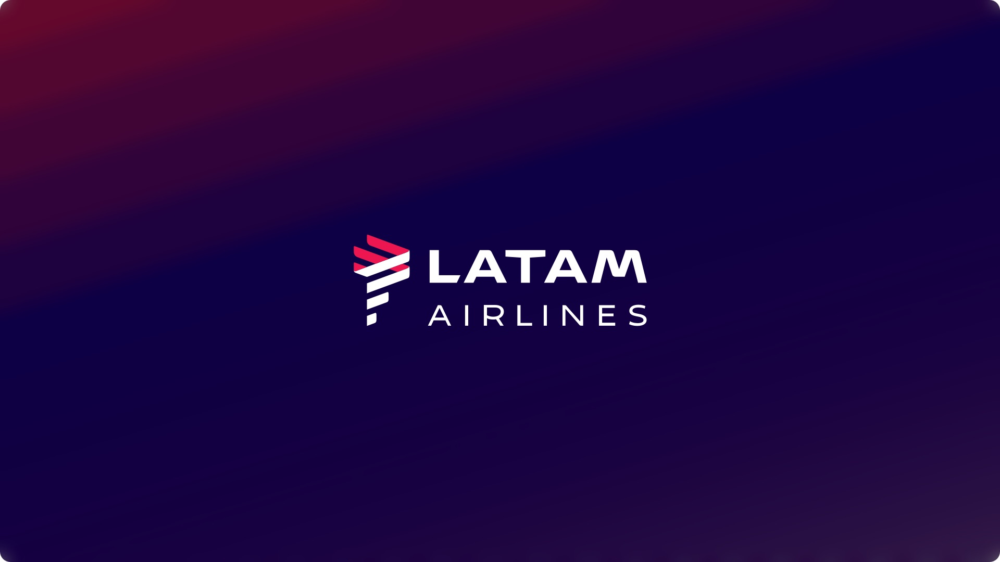
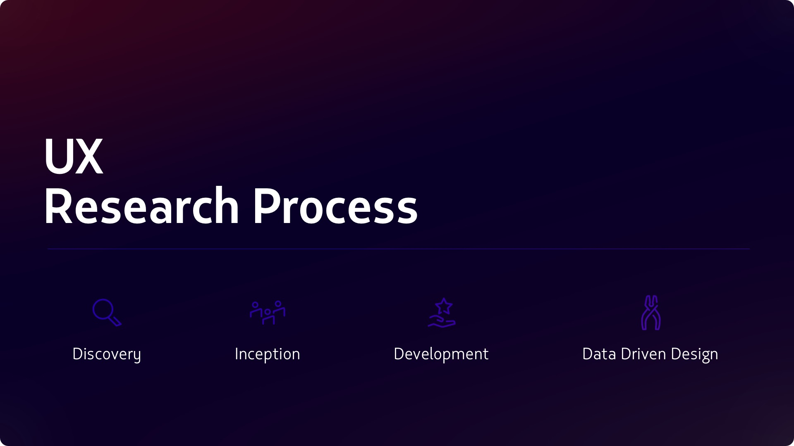
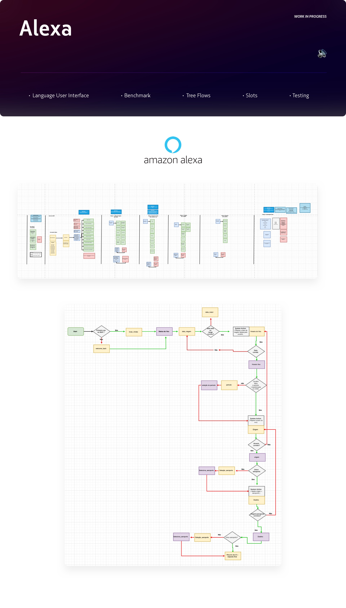

Spearheaded innovation within a 50+ designer organization, conceptualizing the future of the flight experience through AI integrations (Alexa) and redesigning real-time crisis management for millions of passengers.
Designing for Latin America's largest airline requires understanding scale on a different level. As part of a global team of over 50 designers, I was specifically embedded in the Concepts area. My role was to look ahead: from integrating emerging technologies to solving the most critical, high-friction pain points in the passenger journey.
This initiative tackled two highly complex fronts:

To solve real problems, you have to experience them. I didn't stay in Figma; I took my research to the field.
Field Research in Brazil: I traveled to two of Brazil's busiest airports to experience operational contingencies firsthand. I embedded myself on the frontline, interacting directly with passengers affected by delays and cancellations.
Extreme Empathy-Driven Design: Understanding passenger frustration allowed me to design the Contingency App not just as a functional tool, but as an empathetic solution offering clear answers and actionable alternatives in real-time, drastically reducing cognitive load and stress.

Translated complex visual booking and check-in flows into natural, efficient voice interactions for Alexa, opening a new acquisition and retention channel for the airline.
I learned that true innovation isn't just about using new technologies like Alexa; it's about having the humility to go to the frontline, absorb the emotional impact of a frustrated user, and transform that into resilient, scalable digital solutions.